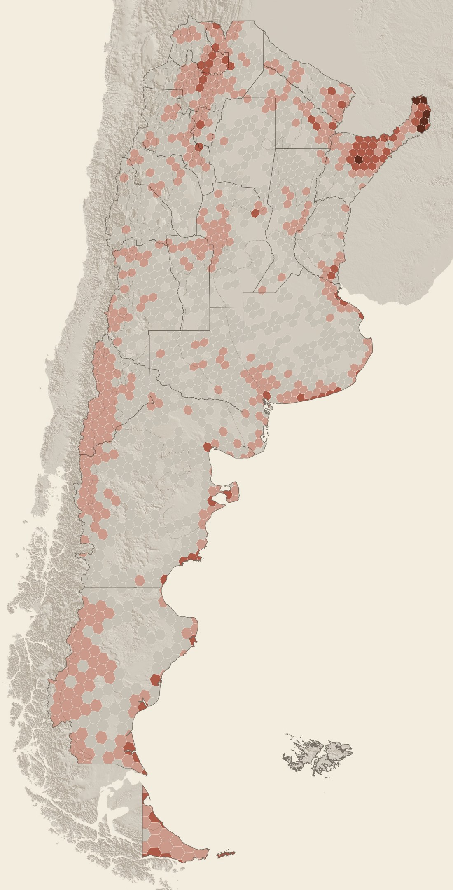
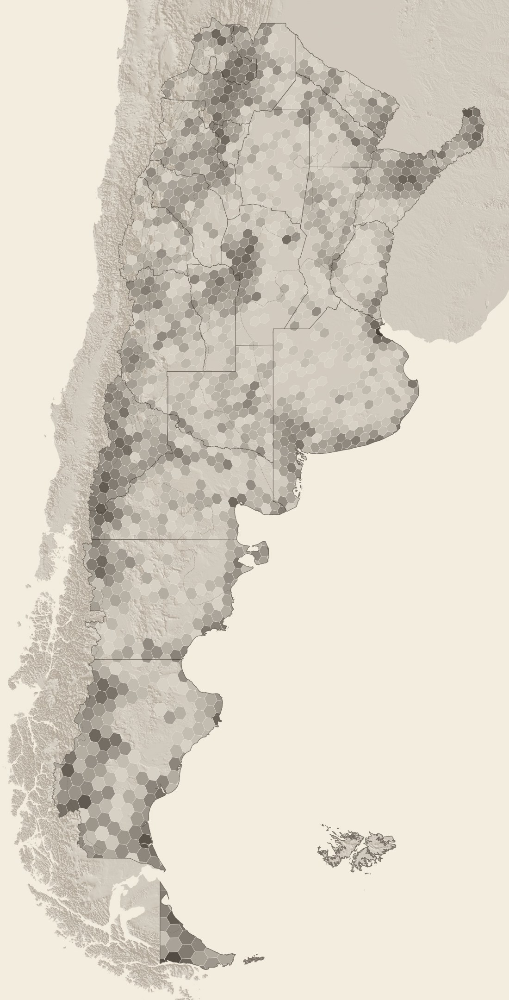

Argentina tiene 205 mamíferos y aves en su lista roja oficial. Seguimos sus huellas en 162.717 registros de ciencia ciudadana y colecciones para preguntar dónde viven, dónde los miramos y de cuáles no sabemos casi nada.
Un mapa de lo que vemos y de lo que se nos escapa.
I.
La lista
Cada sello es una especie. Las resoluciones nacionales 316/2021 (mamíferos) y 795/2017 (aves) las clasifican en peligro crítico, en peligro o amenazadas. Los sellos punteados son especies sin un solo registro georreferenciado entre 2012 y 2025.
{{g.label}}
En peligro crítico (25)En peligro (66)Amenazada ≈ VU (114)Sin registros 2012–2025 (65)

Especies amenazadas registradas por hexágono (H3 res. 4), 2012–2024. Solo registros en tierra.
II.
Dónde se las vio
Entre 2012 y 2024 hubo registros de especies amenazadas en 2.015 celdas del territorio. La mayoría guarda una o dos especies; pocas concentran muchas.
34
especies amenazadas registradas en una sola celda de la Selva Paranaense, en el norte de Misiones: el máximo del país.
Las cinco celdas más ricas están en la Selva Paranaense, los bosques de araucaria y los Esteros del Iberá. Los Andes y la costa patagónica dibujan las otras dos franjas oscuras.
{{e.label}}
Pero ¿es ahí donde viven… o donde hay más gente mirando?
III.
Dónde se mira
Un registro es alguien que vio un animal y lo anotó. Por eso los datos crecen con la cantidad de observadores, no con la de animales: de 2.832 registros en 2012 a 28.420 en 2024.
{{b.corto}}
Registros únicos por año. 2025 (punteado) todavía no está completo.
81 %
de los registros cae en el 10 % de las celdas más visitadas.
92 %
de los registros viene de una sola plataforma de observadores de aves (eBird).

Cantidad de registros por hexágono, 2012–2024 (escala logarítmica: más oscuro = muchos más registros).
IV.
La mirada crece
Tres períodos, la misma pregunta. Cada vez hay más celdas con registros y más especies detectadas. No es que aparezcan animales: es que aparecen ojos.
Cada punto es un lugar (≈1 km) con al menos un registro entre 2012 y 2024; su tamaño crece con la cantidad. Detrás, en rosado, las celdas que ocupa.
{{r.cat}}
{{r.com}}
{{r.cie}}
{{r.nac}}{{r.uicn}}
{{r.datos}}
{{r.nota}}
VI.
Sin huellas
Estas 65 especies están en la lista roja y no tienen ni un registro georreferenciado en 14 años. Son sobre todo roedores, murciélagos y marsupiales. Diez están en peligro crítico.
{{v.nac}}{{v.com}} {{v.cie}}
VII.
Lo que le pasa a la casa
Las ecorregiones con más especies amenazadas registradas no son las más protegidas. En la Pampa húmeda y el Espinal, menos del 4 % de la tierra está bajo alguna área protegida, y casi nada con protección estricta. Los focos de calor se concentran en el Delta, los bosques de araucaria, el Chaco húmedo y los esteros del Iberá.
Ecorregión
Especies
% bajo área protegida · ■ estricta
Focos de calor / 1.000 km² / año
{{r.nom}}
{{r.sp}}
{{r.ap}}
{{r.fu}}
{{q.d}}mil ha de bosque · {{q.nom}}{{q.pct}} del bosque de 2012
Especies: amenazadas con al menos un registro GBIF 2012–2025 en la ecorregión. Áreas protegidas: Tomba (2025), estado a 2022, solo superficie terrestre. Focos: NASA FIRMS VIIRS 375 m, promedio 2012–2025; un foco es una detección térmica, no un incendio. Bosque: MapBiomas Argentina Col. 3, cambio 2012→2025 por ecorregión de Burkart.